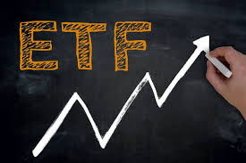

ETF (Exchange Traded Funds, 상장지수펀드)는 거래소에 상장되어 주식처럼 거래되는 펀드입니다. 추종하는 지수의 구성종목들로 펀드를 구성하기 때문에 ETF를 매수하면 지수 구성종목 전체를 매수하는 것과 동일한 효과를 얻습니다. ETF는 실시간 거래하는 주식의 장점과 여러 종목에 분산 투자하는 펀드의 장점을 함께 가지고 있습니다.

거래소 상장 상품으로서의 특징
시간 거래 : 주식매매와 동일한 방법으로 시간 및 가격 선택이 가능하다.
신용거래 및 공매도 : 주식과 동일한 방식이다.
펀드로서의 특징
기준가격 : 펀드와 같이 매일 기준가격을 산정한다. 특히 장중에는 실시간 가격(iNAV)이 제공되어 거래할 때 참고 가능하다.
분산투자 : ETF는 10종목 이상의 자산으로 구성되어 있어 ETF 자체를 매수하는 것만으로도 분산투자와 같은 효과 얻는다.
변화된 펀드로서의 특징
판매사를 통한 설정/환매 불가 : 증권매매계좌를 통한 매매만 가능하다.
분배금(배당금)을 수익자(투자자)에게 지급한다.
높은 투명성
자산구성내역 (PDF : Portifolio Deposit File) 일일 공시
유동성 보강
유동성공급자 (LP: Liquidity Provider)라는 제도를 통해 유동성 보강
기초자산의 다양성
주식, 채권, 상품(비금속, 콩, 원유, 금, 은 등), 외환, 헤지펀드 등 ETF의 기초자산은 모든 금융상품이라고 할 수 있을 정도로 다양하다.
ETF만으로 다양한 자산분배 전략이 가능하다